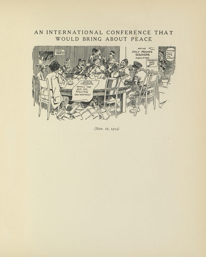

1. An_International_Conference_That_Would_Bring_About_Peace
Luther_Daniels_Bradley
视觉
- 构图：纵向构图
- dominant palette: #e0d0c0, #e0e0c0, #e0d0b0, #d0d0b0, #c0c0a0
用途
- 海报设计参考
- 活动宣传
- 展览主视觉
- 壁纸
Prompt seed
art nouveau vintage poster illustration, An_International_Conference_That_Would_Bring_About_Peace, public domain print